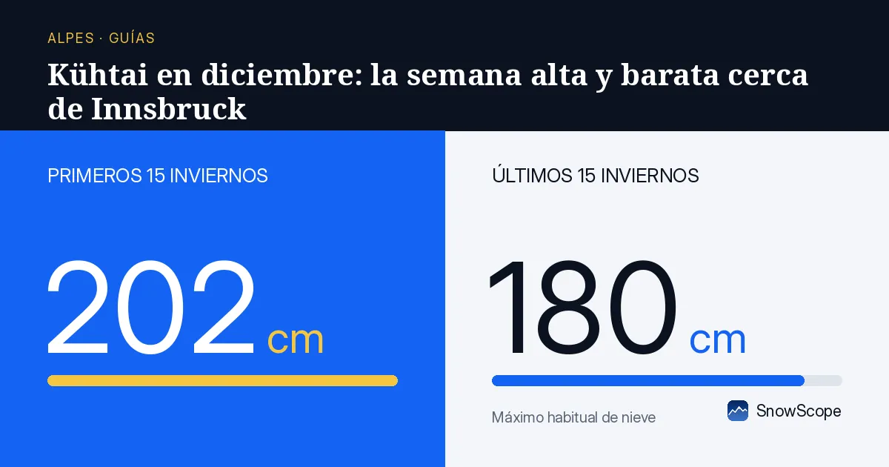

Kühtai en diciembre: la semana alta y barata cerca de Innsbruck
Kühtai está más alto que los telesquís superiores de muchos centros austriacos, y esa altura se aprovecha en diciembre. La base a 1939 m mantiene nieve que los valles más bajos pierden: el 15 de diciembre típico, el registro de SnowScope de 46 inviernos muestra 60 cm allí, con 72 cm a media montaña y 112 cm en la cumbre. La temporada baja dura hasta el 18 de diciembre con un forfait de 6 días a EUR 269.
Consulta la previsión de nieve en tiempo real de Kühtai en la app SnowScopeEspesor de nieve, alertas de nieve polvo y mapa 3D, gratis.
La altura como seguro
La profundidad de nieve aumenta según subes. Kühtai lo demuestra claramente a lo largo de sus 569 m de desnivel. En la base (1939 m) un mediados de diciembre típico tiene 60 cm, a media montaña (2223 m) 72 cm, y en la cumbre (2507 m) 112 cm. Esta diferencia te da opciones cuando las pistas bajas se adelgazan.
Incluso en años débiles, la montaña mantiene nieve. En 1 de cada 10 inviernos, el 15 de diciembre llega con solo 27 cm en la base. Sin embargo, en 46 inviernos de registros, la base nunca ha estado sin nieve en esa fecha. El área mapeada cubre 34 km de pistas y 13 telesquís, y cada pista está en altitud.


Cuándo reservar antes de Navidad
Principios de diciembre es el riesgo. En la base, el 70 % de los inviernos tienen 30 cm o más en la primera semana de diciembre, subiendo al 85 % entre el 8 y 14 de diciembre. En la tercera semana (15-21 de diciembre) alcanza el 93 %, y el 96 % en la semana antes de Año Nuevo. Media montaña es más segura antes: ya el 89 % en la semana uno.
El primer día habitual para encontrar 30 cm en la base es el 12 de noviembre. Para una reserva en diciembre, espera hasta mediados de mes para inclinar mucho las probabilidades a tu favor, o acepta el riesgo de nieve fina si reservas la semana del 27 de noviembre al 4 de diciembre al precio de temporada baja.
Lo que nos dicen los últimos 15 inviernos
Kühtai se ha calentado menos que los valles bajos en los Alpes. El promedio de diciembre en la base bajó ligeramente de 53 cm en los primeros 15 inviernos a 49 cm en los últimos 15 inviernos. En la cumbre, se mantuvo estable alrededor de 103–104 cm. La imagen de la semana de Navidad cambió más: el 100 % de los primeros 15 inviernos tenían 30 cm en la base en la semana de Navidad, pero solo el 87 % de los últimos 15.
El invierno pasado (2025-26) fue fino: 36 cm en la base el 15 de diciembre. Aquí, fino sigue siendo esquiable. La tendencia sugiere que Kühtai sigue siendo más fiable que los centros bajos, pero ningún diciembre está garantizado.
La factura de temporada baja
Reserva antes del 18 de diciembre para fijar el precio de temporada baja. Un forfait de día cuesta EUR 50,50 y un forfait de 6 días EUR 269. A partir del 19 de diciembre, los precios suben a EUR 66,50 por día y EUR 353 por 6 días. Los ahorros en un forfait de una semana son EUR 84.
A partir del 4 de diciembre, cualquier forfait de 2 días o más también funciona en toda la región de Kühtai-Hochoetz, sumando 90+ km de pistas conectadas sin coste extra. Eso importa si el viento cierra el terreno más alto y abierto de Kühtai.
Kühtai frente a Stubaier Gletscher
El Stubaier Gletscher, a 20 minutos de distancia cerca de Innsbruck, está más alto en la cumbre (3208 m frente a 2507 m) y mantiene más nieve allí: 169 cm el 15 de diciembre típico. Su base está más baja (1692 m) y es más fina, con solo 40 cm y nieve en el 72 % de las semanas a mediados de diciembre. Los 60 cm de Kühtai en la base son más gruesos.
Un día de temporada principal en Stubaier Gletscher cuesta EUR 75,50 y un forfait de 6 días EUR 355. Para una semana de diciembre antes del 19 de diciembre, los EUR 269 de Kühtai por 6 días son EUR 86 más baratos. Elige Stubaier si la altura extra y la profundidad del glaciar te atraen y no te importa pagar más. Elige Kühtai para mejor nieve de base y una factura más baja.
Qué empacar y qué saber
Kühtai es un pueblo de paso de montaña en una carretera de montaña. Lleva neumáticos de invierno y cadenas para la nieve; la carretera cierra para control de aludes después de nevadas fuertes. Incluye un día de margen en tus planes si tienes una fecha de salida fija.
El área de esquí mapeada es pequeña y puede esquiarse completamente en dos o tres días por un esquiador intermedio. Usa el enlace de Hochoetz a partir del 4 de diciembre para explorar terreno nuevo sin pagar extra.
Consejos para esquiadores
- Reserva tu forfait de 6 días antes del 18 de diciembre para pagar EUR 269 en lugar de EUR 353 a partir del 19 de diciembre.
- Apunta a la semana del 15-21 de diciembre o posterior: el 93 % de los inviernos tenían 30 cm en la base para entonces, frente al 85 % en la segunda semana.
- Dirígete a las pistas más altas cuando el viento sube; el área conectada de Hochoetz (disponible a partir del 4 de diciembre) ofrece cobijo en su terreno más suave.
- Lleva neumáticos de invierno y cadenas; la carretera a Kühtai cierra por trabajo de aludes después de tormentas. Consulta avalanche.report antes de salir de la pista.
- En un año fino, esquía media montaña y la cumbre primero—la base puede necesitar un día de nieve fresca para cubrir rocas.
Sobre estas cifras
Los espesores de nieve de las estaciones son la nieve más profunda en las pistas altas en la fecha indicada; son estimaciones para una zona, no una medida en un punto. Las previsiones pueden cambiar. Consulta siempre el boletín oficial de aludes antes de salir fuera de pista.
Boletines oficiales de aludes: Avalanche.report – Euregio Tyrol
Citar este informe
Para investigación, docencia o prensa: cifras y gráficos reutilizables libremente bajo CC BY 4.0 con esta cita.
SnowScope (2026), Kühtai en diciembre: la semana alta y barata cerca de Innsbruck, https://snowscope.app/blog/es/2026/11/kuehtai-december-ski-trip-highest-village-innsbruck-budget.html, consultado el 2026-11-14
SnowScope (Atlas Labs). (2026, November 14). Kühtai en diciembre: la semana alta y barata cerca de Innsbruck. SnowScope snow reports. https://snowscope.app/blog/es/2026/11/kuehtai-december-ski-trip-highest-village-innsbruck-budget.html
BibTeX
@misc{snowscope2026kuehtaidecemberskitriphi,
author = {{SnowScope (Atlas Labs)}},
title = {Kühtai en diciembre: la semana alta y barata cerca de Innsbruck},
year = {2026},
month = nov,
howpublished = {\url{https://snowscope.app/blog/es/2026/11/kuehtai-december-ski-trip-highest-village-innsbruck-budget.html}},
note = {Published 2026-11-14 13:29 UTC; accessed 2026-11-14}
}· CC BY 4.0 · Métodos, datos y herramientas →
Kühtai: nieve y temperatura según la altura, este invierno vs el pasado (herramientas) →
Sigue Kühtai
Gratis: un aviso cuando llega la nieve y la previsión cada mañana.